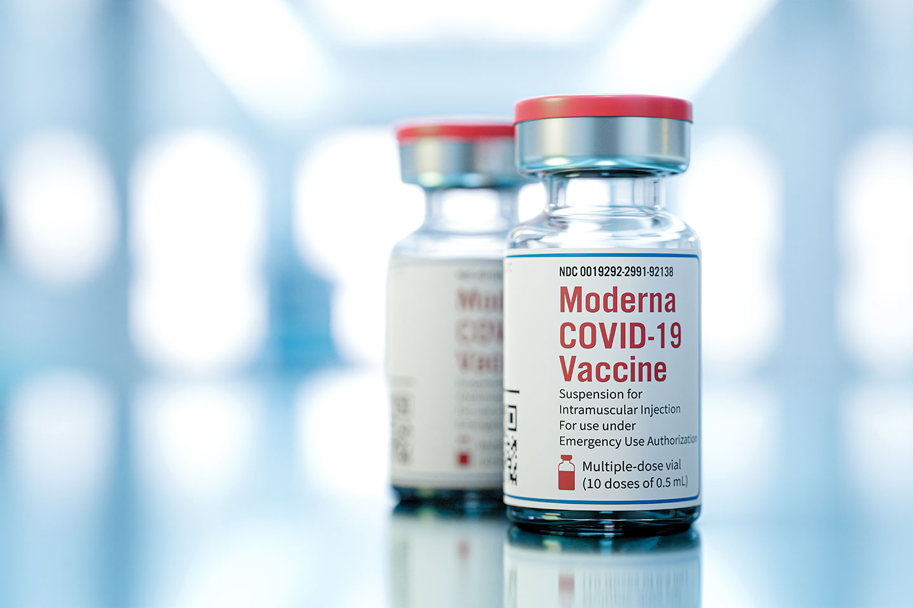
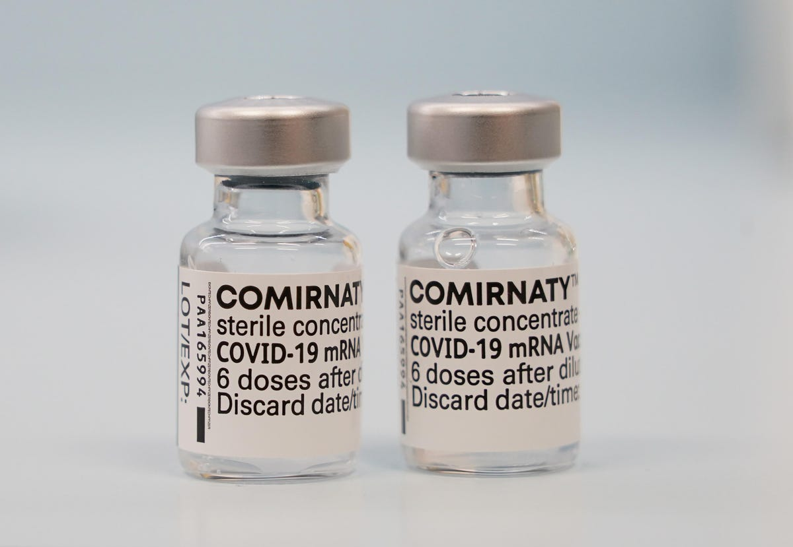

The vaccine that we have now is a mRNA type, which means that it won't give you/expose you to any form of the virus, but since it is made of Ribonucleic Acid, it will instead instruct our cells on how to fight the real virus (although there is a myth that the COVID vaccine gives you the virus, but it won't).
How It Works
First the vaccine is injected in your upper arm. Some of the muscle cells will take the instructions which the mRNA gave, and will make a harmless spike protein (a type of protein found on the outside of the COVID-19 virus). After that, the cells will destroy the instructions for how to make the protein, but the mRNA never goes into the nucleus (where your DNA is stored). Now the spike protein lies on the surface of your cell. Now your immune system senses that the spike protein is a threat, so it starts making antibodies to fight anything which has spike protein. Now your body can spot and destroy COVID-19 before it even grows in your body.
Things To Remember
Once you get the vaccine, you can get pain, redness and swelling on the arm where you got the shot and throughout the rest of your body, you can get tiredness, headache, muscle pain, chills, fever and nausea. Anybody who is younger than 18 years and who have a severe allergic reaction to any part of the vaccine should avoid taking it. You still have to follow COVID-19 guidelines even if you are fully vaccinated, as the vaccine doesn’t make 100% safe from the virus.
Top 3 Widely Used COVID-19 Vaccines From Around The World
3). Covishield ($1.135 Billion)
Also known as Vaxzervria (or formally known as AZD1222), Covishield is made by AstraZeneca and the Serum Institute of India. This vaccine has a 76% efficacy rate after two doses if given two doses within 8-12 weeks range.

2). Moderna ($5.93 Billion)
The Moderna vaccine is also formally known as mRNA-1273, and is made and manufactured by Moderna TX. The vaccine is 94.1% effective if given 2 doses with 4 weeks interval.

1). COMIRNATY (Pfizer-BioNTech) ($5.93 Billion)
Formally known as BNT162b2, the COMIRNATY vaccine is manufactured by Pfizer and BioNTech. This vaccine is 95% effective if given 2 doses with 3 weeks interval.

References
How Do COVID-19 mRNA Vaccines Work?
Top 11 Best Selling COVID-19 Vaccines and Drugs of H1 2021
The Oxford/AstraZeneca COVID-19 vaccine: what you need to know
Pfizer-BioNTech COVID-19 Vaccine Overview and Safety | CDC